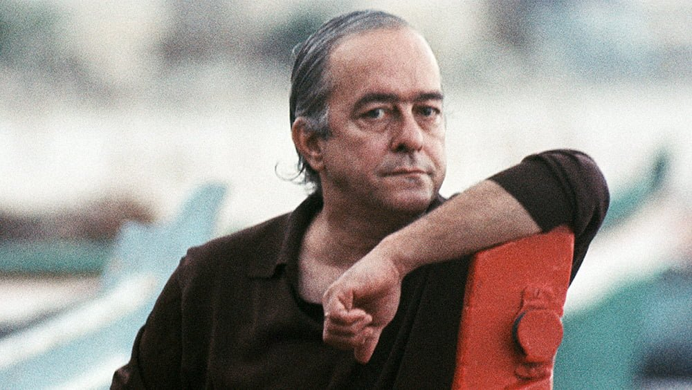

atividade01
atividade01
SONETO DE FIDELIDADE

De tudo, ao meu amor serei atento
Antes, e com tal zelo, e sempre, e tanto
Que mesmo em face do maior encanto
Dele se encante mais meu pensamento.
Quero vivê-lo em cada vão momento
E em louvor hei de espalhar meu canto
E rir meu riso e derramar meu pranto
Ao seu pesar ou seu contentamento.
E assim, quando mais tarde me procure
Quem sabe a morte, angústia de quem vive
Quem sabe a solidão, fim de quem ama
Eu possa me dizer do amor (que tive):
Que não seja imortal, posto que é chama
Mas que seja infinito enquanto dure.
Viniciusdemoraes)